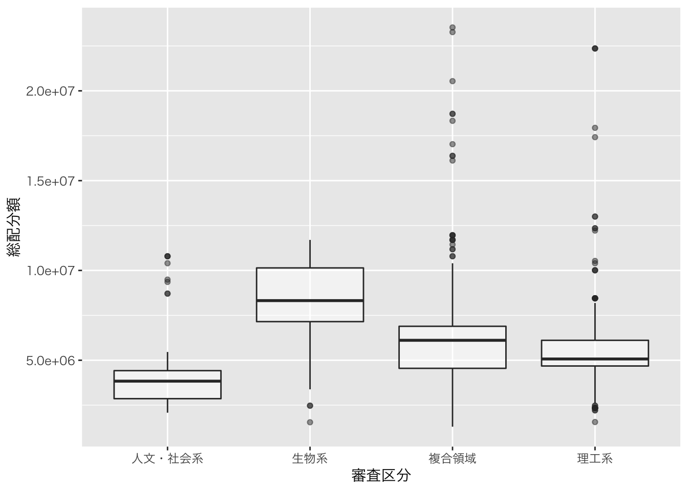
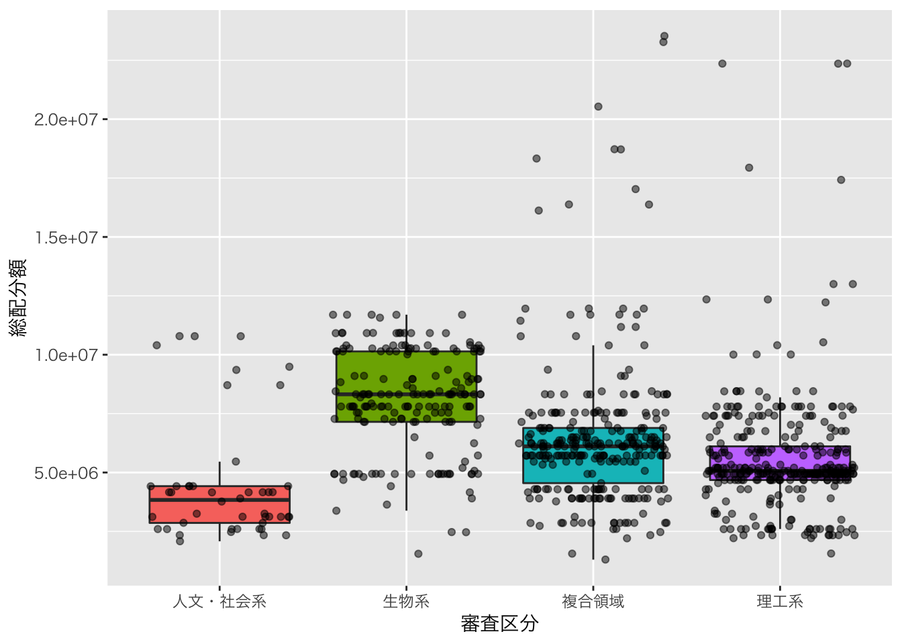
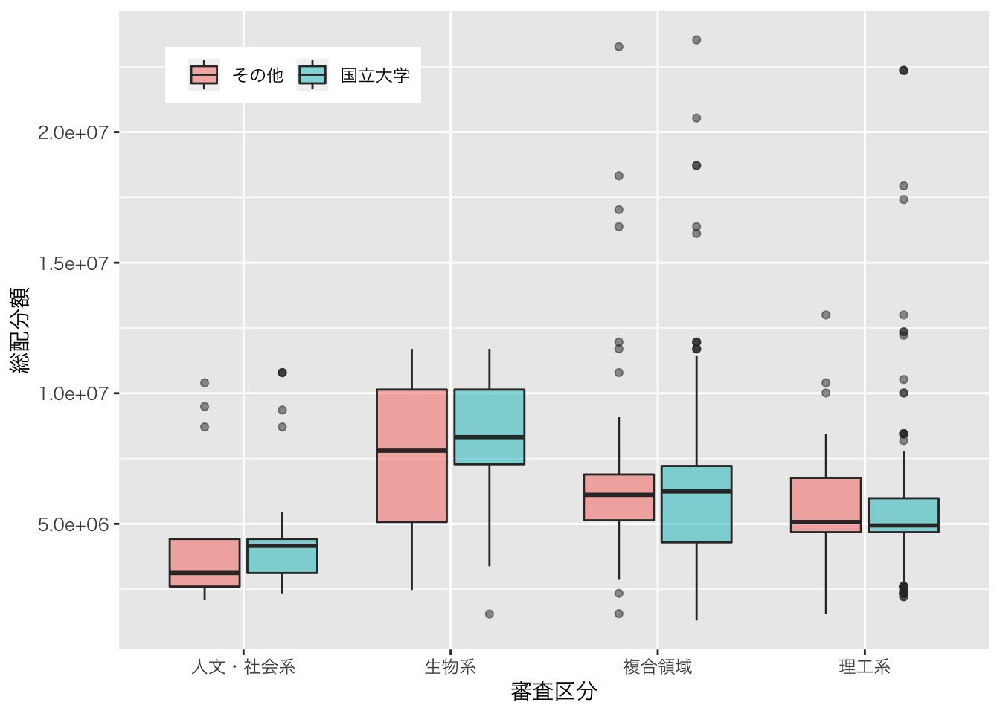
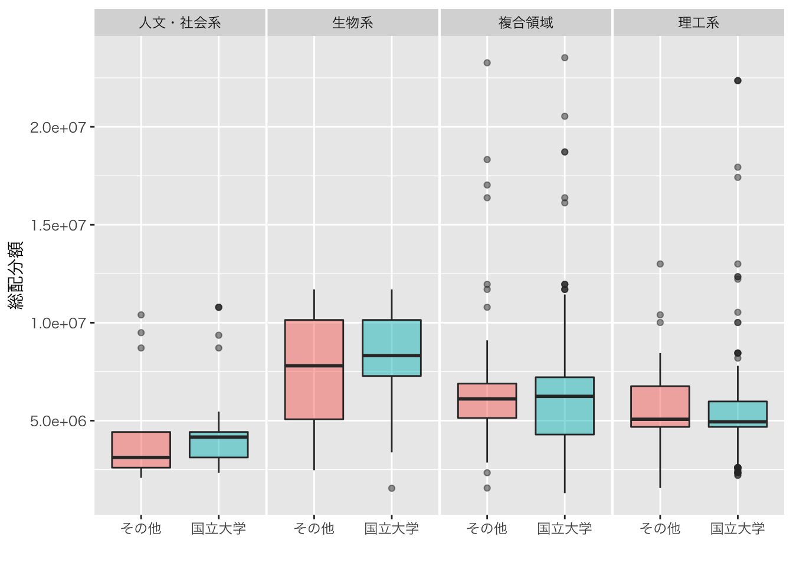
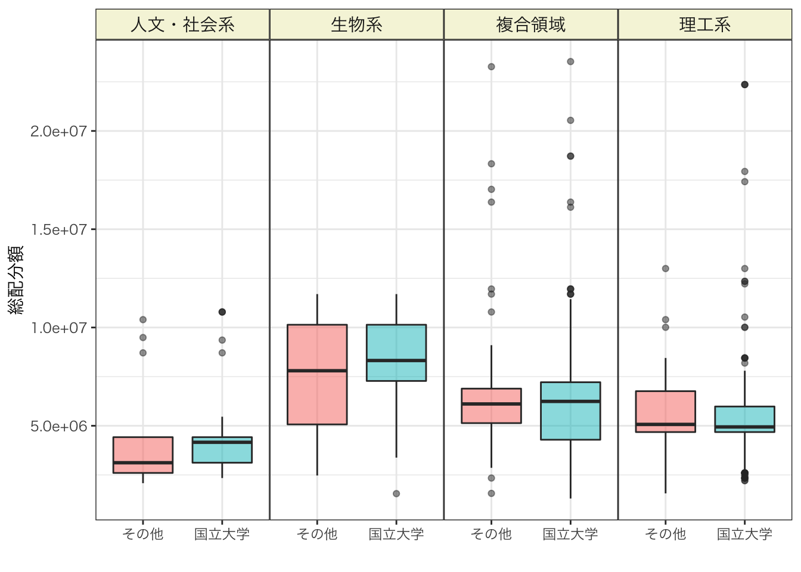

Takuya Kubo, 2020/05/20
このページでは、主にggplot2パッケージを使って科研費の総配分額を箱ひげ図で可視化する方法を紹介していきます。
必要なパッケージとデータは以下の通りです。
# インストールされていない場合は、以下のコマンドの「#」を外して実行
# install.packages("data.table")
# install.packages("dplyr")
# install.packages("DT")
# install.packages("ggplot2")
# パッケージの読み込み
library(data.table) # 高速なデータインポートのため
library(dplyr) # データの整理のため
library(DT) # 集計表の出力のため
library(ggplot2) # グラフ化のため今回は2020年度の新学術領域研究（研究領域提案型）の公募研究の採択課題データと国立大学リストを使います。
# 採択課題データのインポート
d <- fread("kaken_2020_shingakujutsu_koubo.csv")
# 国立大学リスト
natl_univs <- fread("natl_univs.csv")箱ひげ図では事前にデータの集計が必要ありませんが、前回と同様に研究機関のタイプを「国立大学」と「その他」の機関とで分けておきます。
D <- d %>%
# タイプ列に国立大学か否かを
mutate(タイプ = ifelse(研究機関 %in% natl_univs$大学名, "国立大学", "その他")) %>%
# 列の選択
select(研究機関, タイプ, 審査区分, 総配分額)
datatable(D, rownames = FALSE)それでは箱ひげ図を描画していきます。最低限の箱ひげ図を描画するにはggplot関数とaes関数、そして、geom_ boxplot関数を用います。geom_boxplot関数ではx軸とy軸の指定ができますので、今回は審査区分をx軸に、総配分額をy軸にしておきます。これらに加え、以下のコードでは日本語を表示させるためにtheme_gray関数も用いています。
D %>%
# x軸と審査区分、y軸を総配分額に指定
ggplot(aes(x = 審査区分, y = 総配分額)) +
# 箱ひげ図を描画
geom_boxplot(alpha = 0.5) +
# 日本語表記のためフォント変更
theme_gray(base_family = "HiraKakuPro-W3")
箱ひげ図にgeom_jitter関数を組み合わせることで、データの密集具合を確認することもできます。geom_jitter関数は微妙に位置をずらして各値を点で描画するための関数です。以下のコードは実際にgeom_jitter関数を用いた例ですが、いくつかデザインも修正しています。特に、geom_jitter関数の点と箱ひげ図の外れ値の点が重複して表示されないよう、箱ひげ図の外れ値を透明にしている点にご注意ください（outlier.alpha = 0）。
D %>%
# それぞれの箱の色を審査区分ごとに変更
ggplot(aes(x = 審査区分 , y = 総配分額, fill = 審査区分)) +
# 外れ値の色を透明にする（alpha = 0.5）
geom_boxplot(outlier.alpha = 0) +
theme_gray(base_family = "HiraKakuPro-W3") +
# 各値を表示＋点の透明度（alpha）を調整
geom_jitter(alpha = 0.5) +
# 「fill = 審査区分」で生じた凡例の削除
theme(legend.position = "none")
次に、研究機関タイプの情報も箱ひげ図に含めていきます。以下では、aes関数内でx軸、y軸、箱の塗り方の３つの要素に審査区分、総配分額、研究機関タイプをそれぞれ対応させた例です。そして、スペースを有効に用いるため、凡例の位置をグラフの中で表示させるようにしています。
D %>%
# x軸を審査区分、y軸を総配分額、箱の色をタイプに指定
ggplot(aes(x = 審査区分, y = 総配分額, fill = タイプ)) +
# 箱ひげ図の描画、箱に色の透明度を調整
geom_boxplot(alpha = 0.5) +
# 日本語が表示できるフォントに変更
theme_gray(base_family = "HiraKakuPro-W3") +
theme(legend.position = c(0.2, 0.9), # 凡例の位置の調整
legend.direction = "horizontal", # 凡例の配置を水平方向
legend.title = element_blank()) # 凡例のタイトルを削除
前回紹介したfacet_grid関数でも上のグラフと近いグラフを描画することもできます。x軸を研究機関タイプ、y軸を総配分額に指定し、それをfacet_gridで審査区分により４分割します。
D %>%
# x軸をタイプ、y軸を総配分額、箱の色をタイプに指定
ggplot(aes(x = タイプ, y = 総配分額, fill = タイプ)) +
geom_boxplot(alpha = 0.5) +
theme_gray(base_family = "HiraKakuPro-W3") +
# 審査区分ごとにグラフを列に分ける
facet_grid(cols = vars(審査区分)) +
theme(panel.spacing = unit(0.1, "lines"), # 各グラフ間のスペースの調整
legend.position = "none") + # 凡例を削除
# x軸ラベルの削除
xlab("")
最後に、全体のデザインを変更したコードも参考までに紹介しておきます。
D %>%
ggplot(aes(x = タイプ, y = 総配分額, fill = タイプ)) +
geom_boxplot(alpha = 0.5) +
theme_bw(base_family = "HiraKakuPro-W3") +
facet_grid(cols = vars(審査区分)) +
theme(panel.spacing = unit(0, "lines"), # 各グラフ間のスペースを調整
legend.position = "none", # 凡例を削除
strip.background = element_rect(fill = "beige"), # 各グラフ上部のラベルの背景色を変更
strip.text = element_text(size = 11)) + # 各グラフ上部のラベルの大きさを変更
xlab("")
今日はggplot2を用いた箱ひげ図の書き方を色々なデザインとともに紹介してきました。ggplot2パッケージを用いたデータの可視化も今回で６回目になりましたが、これで一通り基本的なグラフ化の手法は紹介できたのではないかと思います。これで、ある程度は自分が表現したいグラフを描けるようになったかと思いますので、あとは実践あるのみです。